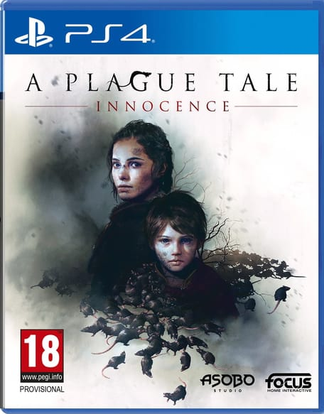

A Plague Tale: Innocence
Posted by Syanks on 14th February 2022

A Plague Tale: Innocence - PlayStation 4, XBOX ONE, PC (2019), PlayStation 5, XBOX SERIES, Switch (2021)

Platformers is the one genre of video games that I happily return to. This could be for several reasons - the main one being the fact that I grew up playing games from this genre, especially games like Croc: Legend of the Gobbos, Hugo: Quest for the Sunstones (along with Black Diamond Fever, and The Evil Mirror), Donald Duck: Quack Attack (or Goin’ Quackers, depending on the country you live in), many Sonic the Hedgehog games (even Shadow the Hedgehog is among those I’ve played as a kid), Toy Story 2 (which is still one of my favourite licensed games EVER), and - of course - the best known platforming series: Super Mario. Also, you could say that I’m using this genre to “go back in time to my childhood”, or something like that. Even as a teenager I still play some platformers. The more commonly known ones like Sly Cooper (still waiting for the revival of the series), Crash Bandicoot, Spyro, Ratchet and Clank, and LittleBigPlanet. And some indie, or lesser known/forgotten ones, like A Hat in Time and Yooka-Laylee (that wanted to capture the magic of old collect-a-thons, and were founded on Kickstarter and released back in 2017), or Kao the Kangaroo (the series that were revived around 2020), and Klonoa: Door to Phantomile (which along with the second game Klonoa 2: Lunatea’s Veil will get released in July of 2022 as Klonoa: Phantasy Reverie Series on Nintendo Switch and somedate later on everything else). That’s why thanks to XBOX GAME PASS, I’ve played the two games that I was interested in playing, and I’ve heard many good things about - Super Lucky’s Tale (which was released in 2017 for XBOX ONE and PC), and New Super Lucky’s Tale (which is the remastered version of Super Lucky’s Tale that was released in 2019 for the Nintendo Switch and in 2020 for XBOX ONE, PlayStation 4, and PC). These two are the sequels to Lucky’s Tale, which is a VR-only game released in 2016 for PC, and got remastered in 2021 for PC and Oculus Quest 2. As the original game is still VR-only despite being remastered and I have no way to play it, as of making of this video at least, I’ll just jump straight right into the sequels, so let’s check them out, shall we?
Both Super Lucky’s Tale and New Super Lucky’s Tale are telling pretty much the same story. Lucky Swiftail and his sister, Lyra, are the descendants of the Swiftail family which is a family of Guardians. This much info is given out in both games. However, the backstory given to the events of the games differ depending on the game we’re playing. In Super Lucky’s Tale, Lyra returns from her adventure with the Book of Ages, which she was looking for, in hand. However, their reunion wouldn’t last long, as shortly after Lucky saw her airplane, it crashed thanks to Jinx and his Kitty Litter who wanted to snatch said Book to gain unlimited power, and… TAKE OVER THE WORLD, business as usual. In New Super Lucky’s Tale though, the backstory is much grimmer than it should be in such a colourful title, if you ask me. As Lyra states, it all began with the destruction of their home. Jinx - who was a Guardian himself, but turned rogue - betrayed his friends to get his paws on the Book of Ages - a book capable of rewriting history of their world, along with being home to many worlds, like Sky Castle. He wanted to gain unlimited power from it, and in turn TAKE OVER THE WORLD. However, Lyra along with young Lucky and some other Guardians (that weren’t sent far away by Jinx’s magic) took the Book and escaped. They were hiding for a few years, but in Foxington (their hometown) Jinx and his kids found them. Book of Ages - to either protect itself, or the Guardians, or both - reacted to Jinx’s magic by creating a storm that ripped its pages and sucked Jinx, his Kitty Litter, and Lucky to its contents. So now, it’s up to Lucky to stop Jinx and his kids, save the worlds within the Book of Ages… and their own world, from destruction.
So, with the plot of these games outta the way, let’s get down to business, namely - gameplay (of course). Gameplay-wise these games are as basic as a platformer can get. It doesn’t mean that it’s bad, though, as these two introduce new gimmicks in practically every world, so the playthrough definitely doesn’t get tedious or boring. For instance, in some levels you have to pick up an item to progress further through the level, which makes Lucky vulnerable to damage, as he can’t attack, jump, or burrow. OK, now let’s talk about Lucky’s moveset, as it slightly differs between games. In Super Lucky’s Tale, Lucky moves a little bit slower than in New Super Lucky’s Tale… and he’s running on all fours. He can attack by swiping his tail at his enemies, or by jumping on their heads. His additional moves in the game are burrowing, ground pounding, hovering in the air, climbing ladders, and - of course - jumping (even double-jumping which is a given in platformers nowadays). In New Super Lucky’s Tale, on the other hand, Lucky is moving faster by… running on two paws of his. I’ve no idea how he does that or how it works, but… OK? He can do everything that he’s able to do in Super Lucky’s Tale with one exception: as now, he can also slide for a short amount of time on any hard surface he’s currently on. Also, when Lucky comes into contact with solid ground after hovering he will do either a ground pound or slide on a hard surface depending on the game we’re playing… Which doesn’t mean that in New Super Lucky’s Tale ground pound isn’t present - it is present, though it’s not as visually communicated, as in the previous iteration (where he bounced off the solid ground). And… This is all if we’re talking about what Lucky can do in these games.
In other cases, controls are responsive in Super Lucky’s Tale, but I didn’t find them AS responsive AS in New Super Lucky’s Tale. From the changes I especially liked the free camera movement which was implemented in New Super Lucky’s Tale - for me it’s a change for the better when compared to the Super Mario 64-like camera that was present in Super Lucky’s Tale.
Maybe I should talk about collectibles real quick. There are 5 types of them: coins, letters of Lucky’s name, clovers/pages (depending on a game you’re playing), small gems, and big gems. THAT’S ALL.
© 2020-2022 Syanks
I'm on social media:
Twitter: 
YouTube: